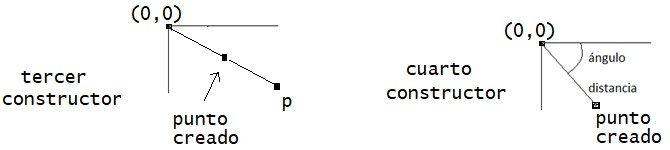

Ejercicio 6: Programa la siguiente clase, que representa un punto de la pantalla que está en unas coordenadas (x,y) comprendidas entre 0 y el tamaño de la pantalla.
| Punto |
+ int x
+ int y |
+ Punto()
+ Punto(int x, int y)
+ Punto(Punto p)
+ Punto(double angulo, double distancia) |
-
El primer constructor crea un punto situado en las coordenadas (0,0)
-
El segundo constructor crea un punto situado en las coordenadas (x,y). Si las coordenadas caen fuera de la pantalla (utiliza la clase Toolkit de la librería Java 2D para obtener el tamaño de la pantalla), el punto se pondrá en la esquina inferior derecha de la pantalla.
-
El tercer constructor crea un punto situado en el punto medio del origen (0,0) y el punto pasado como parámetro. Observa la imagen adjunta para ver lo que se pide.
-
El cuarto constructor crea un punto situado a un ángulo y distancia del origen, según se indica la imagen adjunta. (Sugerencia: usa la definición de seno y coseno para obtener el valor de las coordenadas x e y)

| En los siguientes ejercicios, programa las clases y añade varios test que usen asertos para comprobar que los métodos constructores que has programado funcionan correctamente. |